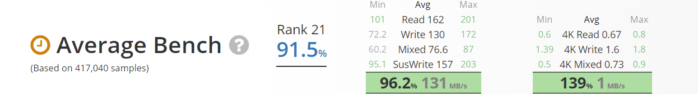
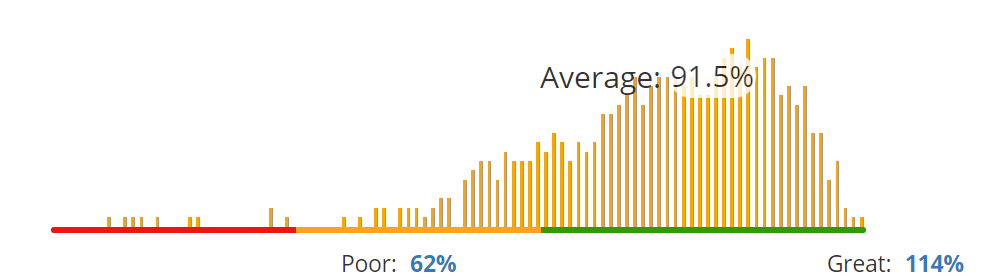

-

$55.49 -
- Specifications
- Manufacturer: Seagate
- Capacity: 2 TB
- Price / GB: $0.028
- Type: 7200RPM
- Cache: 256 MB
- Form Factor: 3.5"
- Interface: SATA 6 Gb/s
- NVME: No
- 
- 
- Features
- - Versatile HDDs for all your PC needs bring you industry-leading excellence in personal computing.
- - Capacities up to 8TB for desktop.
- - Advanced Power modes help save energy without sacrificing performance.
- - SATA 6Gb/s interface optimizes burst performance; 256MB Cache.
- - 7200 RPM.